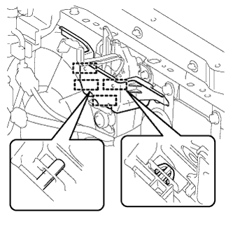

ВЕНТИЛЯТОР КОНДЕНСАТОРА > СНЯТИЕ |
| 1. СНИМИТЕ ВЕРХНЕЕ УПЛОТНЕНИЕ КРОНШТЕЙНА РАДИАТОРА |
Освободите 13 фиксаторов и снимите верхнее уплотнение кронштейна радиатора.
| 2. СНИМИТЕ РЕШЕТКУ РАДИАТОРА |
Снимите решетку радиатора (Нажмите здесь).
| 3. СНИМИТЕ ЗАЩИТНЫЙ ЭЛЕМЕНТ РЫЧАГА РАЗБЛОКИРОВКИ ЗАМКА КАПОТА |
|  |
Освободите 2 захвата и 2 направляющих и снимите защитный элемент рычага разблокировки замка капота.
| 4. СНИМИТЕ ЗАМОК КАПОТА В СБОРЕ |
Для моделей с левосторонним рулевым управлением:
Снимите замок капота в сборе (Нажмите здесь).
Для моделей с правосторонним рулевым управлением:
Снимите замок капота в сборе (Нажмите здесь).
| 5. СНИМИТЕ ТРУБКУ СИСТЕМЫ КОНДИЦИОНИРОВАНИЯ В СБОРЕ |
Отсоедините зажим, выверните 2 болта и отсоедините трубку и обвязку системы кондиционирования в сборе.
| 6. СНИМИТЕ ВЕНТИЛЯТОР С КОЖУХОМ В СБОРЕ |
Отсоедините разъем.
Выверните болт и снимите вентилятор с кожухом, как показано на рисунке.